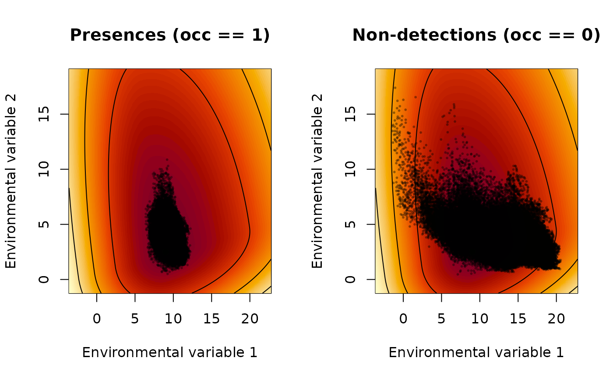
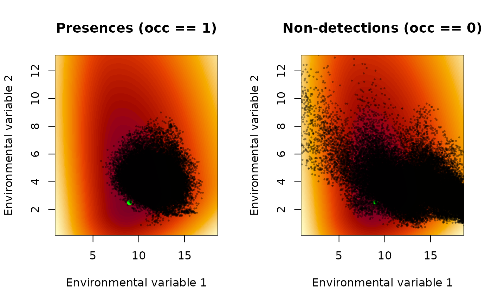

Tool to help interpret xsdm model parameters
Source:R/interpret_parameters.R
interpret_parameters.RdDue to the parameter reduction step which was carried out to eliminate structural non-identifiability in the xsdm model, parameter interpretation is more difficult. This function helps with that difficulty, displaying contours for the inferred log growth-environment function. The shapes of these contours are determined by inference, even though their levels are not; and the shapes are generally more informative anyway. See the manual documents “The xsdm model” and “How to fit xsdm models with species occurrence data using xsdm” for additional details.
Usage
interpret_parameters(
param_list,
plot_indices,
plot_lims = NULL,
env_dat = NULL,
occ = NULL,
breadth = 1,
...
)Arguments
- param_list
A named list of xsdm model parameters such as returned by
math_to_bio. Must contain elementsmu,sigltil,sigrtil,ctil,pd, ando_mat.- plot_indices
A length-1 or length-2 integer vector of indices of environmental variables against which the growth-environment function is to be plotted. For a length-2 vector, the first index is the horizontal axis, the second the vertical. Other environmental variables are held at their values in
param_list$mu.- plot_lims
Optional list of the same length as
plot_indices, each element a 2-vector giving the plotting extent *relative to*mu. IfNULL(the default) andenv_datis supplied, limits are auto-derived viaauto_plot_lims_()using thebreadthargument. The auto-derived limits cover the full observed environmental range plus a symmetric margin on each side.- env_dat
Optional 3D numeric array of environmental data with dimensions
(locations) x (time) x (variables). Required for the two-panel (presence vs non-detection) display and for auto-derivedplot_lims. IfNULL, a single-panel legacy plot is drawn andplot_limsmust be supplied.- occ
Optional length-
(locations)logical or 0/1 vector of presence/absence. Required together withenv_datfor the two-panel display.- breadth
Scalar in
[0, 1]controlling how wide the auto-derived plotting window is aroundmu:breadth = 1(default) shows the full min-max environmental range plus a 10% margin on each side;breadth = 0collapses to essentially a single point. Ignored whenplot_limsis supplied.- ...
Additional graphical arguments passed to
plot(1D case) orimage(2D case).
Value
Invisibly returns the (possibly auto-derived) plot_lims
list, so downstream code can reuse the same limits. The main purpose
of the function is its side effect: plots are sent to the default
graphics device.
Details
If env_dat and occ are provided, two panels are drawn side
by side: on the left the growth-environment function is shown together
with the environmental values at presence locations (occ == 1);
on the right the same function is shown together with the environmental
values at non-detections (occ == 0). Both panels share identical
contour breaks (bivariate case) or identical axes (univariate case), so
the two are directly comparable.
The log growth-environment function is determined by inference only up to an affine transformation \(g = a f(e) + b\) with \(a > 0\). Its contours are therefore unlabelled in the output; their shape is what is interpretively meaningful. In code the function is $$y(e) = -\sum_i \left( \frac{[u_i]_+}{\sigma^R_i} + \frac{[u_i]_-}{\sigma^L_i} \right)^2 , \quad u = O^{T} (e - \mu),$$ which is always \(\le 0\), attains its maximum 0 at \(e = \mu\), and decreases without bound as \(e\) moves away from \(\mu\). Consequently the numeric values on the y-axis of the univariate plot and the numeric values of the image colors in the bivariate plot carry no units of their own.
Examples
# \donttest{
# Two-panel (presence vs non-detection) plot with auto-derived limits
interpret_parameters(
example_1$par_list,
plot_indices = c(1, 2),
env_dat = example_1$env_array,
occ = example_1$occ_df$presence
)

# Narrower auto-derived window
interpret_parameters(
example_1$par_list,
plot_indices = c(1, 2),
env_dat = example_1$env_array,
occ = example_1$occ_df$presence,
breadth = 0.7
)

# }